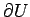
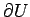

Inhalt Index DeskTop Bronstein

 Dynamische Systeme und Chaos Gewöhnliche Differentialgleichungen und Abbildungen Strukturelle Stabilität (Robustheit) Strukturstabile Differentialgleichungen
Dynamische Systeme und Chaos Gewöhnliche Differentialgleichungen und Abbildungen Strukturelle Stabilität (Robustheit) Strukturstabile Differentialgleichungen


Die Differentialgleichung (17.1), d.h. das Vektorfeld , heißt strukturstabil (oder robust), wenn bei kleinen Störungen von f topologisch äquivalente Differentialgleichungen entstehen. Die präzise Definition der Strukturstabilität erfordert einen Abstandsbegriff zwischen zwei Vektorfeldern auf  . Wir beschränken uns auf die Betrachtung solcher glatter Vektorfelder auf
. Wir beschränken uns auf die Betrachtung solcher glatter Vektorfelder auf  , die alle eine feste offene, beschränkte und zusammenhängende Menge
, die alle eine feste offene, beschränkte und zusammenhängende Menge  als absorbierende Menge besitzen. Der Rand  von U sei eine glatte (n-1)-dimensionale Hyperfläche und sei darstellbar als , wobei
als absorbierende Menge besitzen. Der Rand  von U sei eine glatte (n-1)-dimensionale Hyperfläche und sei darstellbar als , wobei  eine C1-Funktion mit in einer Umgebung von ist. Sei der metrische Raum aller glatten Vektorfelder auf
eine C1-Funktion mit in einer Umgebung von ist. Sei der metrische Raum aller glatten Vektorfelder auf  , versehen mit der C1-Metrik
, versehen mit der C1-Metrik
| (17.25) |
(Im ersten Term der rechten Seite bedeutet die EUKLIDische Vektornorm, im zweiten die Operatornorm.) Diejenigen glatten Vektorfelder  , die transversal den Rand in Richtung U schneiden, d.h., für die und gilt, bilden die Menge . Das Vektorfeld
, die transversal den Rand in Richtung U schneiden, d.h., für die und gilt, bilden die Menge . Das Vektorfeld  heißt strukturstabil, wenn es ein
heißt strukturstabil, wenn es ein  gibt, so daß jedes andere Vektorfeld mit topologisch äquivalent zu f ist.
gibt, so daß jedes andere Vektorfeld mit topologisch äquivalent zu f ist.
| Beispiel |
|
Betrachtet wird die ebene Differentialgleichung |
mit einem Parameter  , wobei sei. Die Differentialgleichung g gehört z.B. zu
, wobei sei. Die Differentialgleichung g gehört z.B. zu  mit (s. linke Abbildung). Offenbar gilt . Das Vektorfeld
mit (s. linke Abbildung). Offenbar gilt . Das Vektorfeld  ist strukturell instabil, da beliebig nahe von
ist strukturell instabil, da beliebig nahe von  Vektorfelder existieren, die topologisch nicht äquivalent zu
Vektorfelder existieren, die topologisch nicht äquivalent zu  sind (s. mittlere und rechte Abbildung).
sind (s. mittlere und rechte Abbildung).
Dies wird klar, wenn man zur Polarkoordinatendarstellung von (17.26) übergeht. Für  existiert immer der stabile Grenzzyklus
existiert immer der stabile Grenzzyklus  .
.